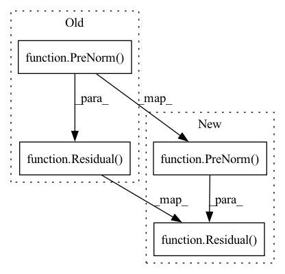

Pattern ID :12552
Before Change
for _ in range(depth):
self.layers.append(nn.ModuleList([
Residual(PreNorm(dim, Attention(dim, heads = heads, causal = True))),
Residual(PreNorm( dim, Attention(dim, heads = heads)) ) ,
Residual(PreNorm(dim, FeedForward(dim))),
]))
def forward(self, x, context = None, mask = None, context_mask = None):After Change
for _ in range(depth):
self.layers.append(nn.ModuleList([
Residual(PreNorm(dim, Attention(dim, heads = heads, causal = True))),
Residual(PreNorm( dim, Attention(dim, heads = heads)) ) if cross_attend else None,
Residual(PreNorm(dim, FeedForward(dim))),
]))
def forward(self, x, context = None, mask = None, context_mask = None):In pattern: SUPERPATTERN
Frequency: 4
Non-data size: 4
Instances Fragment ID: 42664382
Project Name: lucidrains/x-transformers
Commit Name: ff90da8c5f3d973d0088cf9b1b134abc70e26693
Time: 2020-11-03
Author: lucidrains@gmail.com
File Name: x_transformers/x_transformers.py
M Class Name: Decoder
N Class Name: Decoder
M Method Name: __init__(5)
N Method Name: __init__(4)
M Parent Class: nn.Module
N Parent Class: nn.Module
M File Name: x_transformers/x_transformers.py
N File Name: x_transformers/x_transformers.py
M Start Line: 113
M End Line: 113
N Start Line: 108
N End Line: 115
Before Change
layers = []
for _ in range(depth):
layers.extend([
Residual(PreNorm( dim, SelfAttention(dim, heads)) ) ,
Residual(PreNorm(dim, FeedForward(dim)))
])
self.layers = nn.Sequential(*layers)After Change
self.pos_emb = RelativePositionalEmbedding
self.to_logits = nn.Linear(dim, num_tokens)
self.attn_layers = nn.ModuleList([Residual(PreNorm( dim, SelfAttention(dim, heads)) ) for _ in range(depth)])
self.ff_layers = nn.ModuleList([Residual(PreNorm(dim, FeedForward(dim))) for _ in range(depth)])
def forward(self, x, mem = None): Fragment ID: 42664387
Project Name: lucidrains/compressive-transformer-pytorch
Commit Name: 47a5b8448090fce7ca1f7356001fb2ac381c2239
Time: 2020-06-30
Author: lucidrains@gmail.com
File Name: compressive_transformer_pytorch/compressive_transformer_pytorch.py
M Class Name: CompressiveTransformer
N Class Name: CompressiveTransformer
M Method Name: __init__(7)
N Method Name: __init__(6)
M Parent Class: nn.Module
N Parent Class: nn.Module
M File Name: compressive_transformer_pytorch/compressive_transformer_pytorch.py
N File Name: compressive_transformer_pytorch/compressive_transformer_pytorch.py
M Start Line: 93
M End Line: 99
N Start Line: 100
N End Line: 110
Before Change
self.layers = nn.ModuleList([])
for _ in range(depth):
layer = Residual(PreNorm( dim, AdjacentAttention(
dim = dim,
dim_head = dim_head,
heads = heads
)) )
self.layers.append(layer)
def forward(self, x, adjacency_mat, mask = None):
device = x.deviceAfter Change
for _ in range(depth):
self.layers.append(nn.ModuleList([
Residual(PreNorm( dim, AdjacentAttention(
dim = dim,
dim_head = dim_head,
heads = heads
)) ) ,
Residual(PreNorm(dim, FeedForward(
dim = dim
))) Fragment ID: 42664385
Project Name: lucidrains/adjacent-attention-network
Commit Name: fa7a72d7d257d72c159b59572297133ee91905cb
Time: 2020-12-13
Author: lucidrains@gmail.com
File Name: adjacent_attention_network/adjacent_attention_network.py
M Class Name: AdjacentAttentionNetwork
N Class Name: AdjacentAttentionNetwork
M Method Name: __init__(1)
N Method Name: __init__(1)
M Parent Class: nn.Module
N Parent Class: nn.Module
M File Name: adjacent_attention_network/adjacent_attention_network.py
N File Name: adjacent_attention_network/adjacent_attention_network.py
M Start Line: 103
M End Line: 111
N Start Line: 114
N End Line: 126
Before Change
for _ in range(depth):
self.layers.append(nn.ModuleList([
Residual(PreNorm(dim, Attention(dim = dim, heads = heads, dim_head = dim_head, dropout = attn_dropout))),
Residual(PreNorm( dim, FeedForward(dim = dim, dropout = ff_dropout)) )
]))
self.to_logits = nn.Sequential(
nn.LayerNorm(dim),After Change
attn.to_kv = shared_kv_proj
self.layers.append(nn.ModuleList([
Residual(PreNorm( dim, attn) ) ,
Residual(PreNorm(dim, ff))
]))
Fragment ID: 42664389
Project Name: lucidrains/feedback-transformer-pytorch
Commit Name: 8044063db1a5fc092c9ce68998dc1e301d9f7818
Time: 2021-02-02
Author: lucidrains@gmail.com
File Name: feedback_transformer_pytorch/feedback_transformer_pytorch.py
M Class Name: FeedbackTransformer
N Class Name: FeedbackTransformer
M Method Name: __init__(1)
N Method Name: __init__(1)
M Parent Class: nn.Module
N Parent Class: nn.Module
M File Name: feedback_transformer_pytorch/feedback_transformer_pytorch.py
N File Name: feedback_transformer_pytorch/feedback_transformer_pytorch.py
M Start Line: 192
M End Line: 204
N Start Line: 194
N End Line: 212